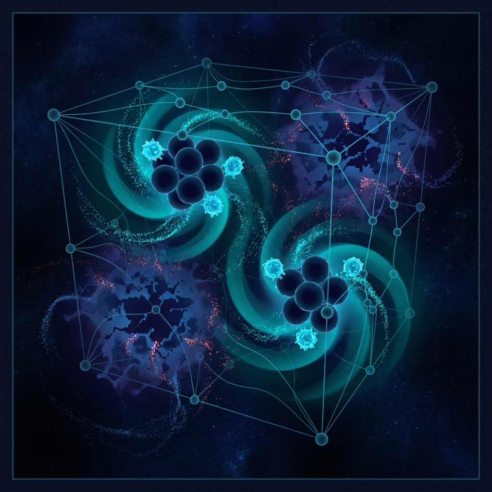
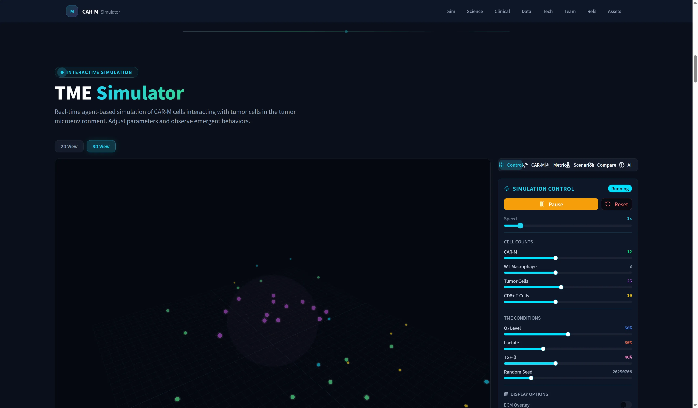
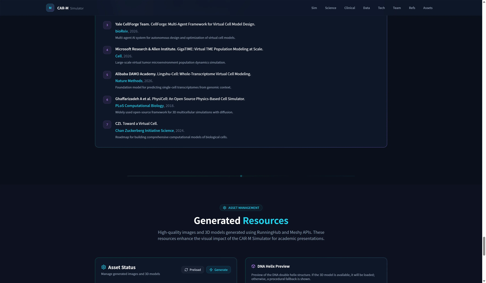
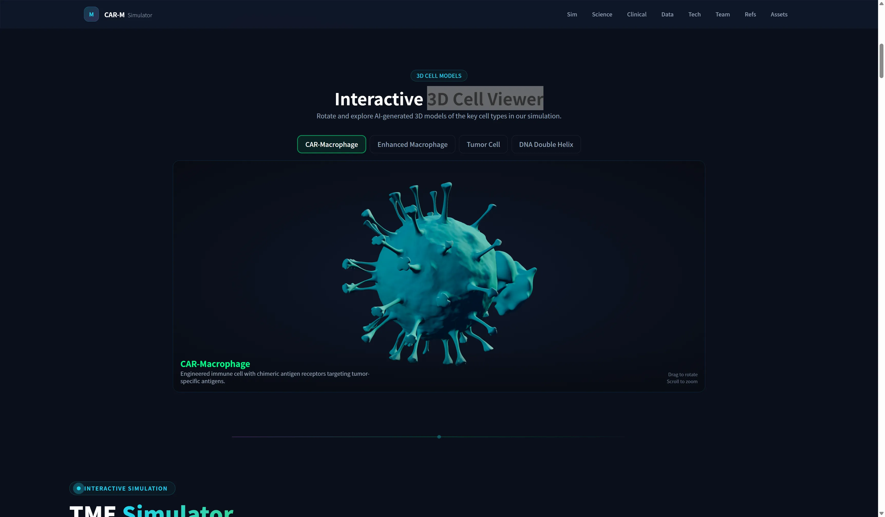

用于探索 CAR-engineered macrophage 在肿瘤微环境中行为动态的机制启发型 Web 平台。
CAR-T 在实体瘤中常受限于浸润不足、免疫抑制性 TME、抗原异质性和毒性管理。CAR-M 的价值在于：它天然进入实体组织，并同时承担吞噬、抗原呈递与微环境重塑。
抑制性细胞因子、低氧/乳酸、ECM 屏障会改变免疫细胞行为。
巨噬细胞的极化状态和吞噬概率可以被工程化设计影响。
把机制假设转成可以调参、运行、比较的交互系统。

平台把 CAR 设计、TME 条件、细胞行为和实时指标连接起来，用于比较机制趋势，而不是替代实验或临床判断。
CAR-M、肿瘤细胞、野生型巨噬细胞和 CD8+ T 细胞在同一 TME 中实时运动、相互作用。
CAR 信号域、抗原、亲和力、CD47/SIRPα 阻断和 TME 条件会改变模拟输入。
Dashboard 追踪肿瘤数量、吞噬率、M1/M2 比例和 CD8+ T 细胞活化趋势。



本项目不把这些数字当作模型验证结果，仅用于锚定情境设计。
运行 CT-0508-inspired baseline，展示默认细胞组成、CAR-M 数量、肿瘤细胞数量、TGF-β 和随机种子。
切到 CAR-M Designer、Preset Scenarios 或 Compare，展示 HER2-low、CD147 ECM degradation、cold tumor 等情境如何改变趋势。
本地服务未启动。请先运行 npm run preview（或 dev），再翻回此页。
每个细胞每帧都求解极化 ODE，会拖慢 100+ cell 的实时决策。
IFN-γ、IL-4、IL-10、TGF-β 等局部信号输入模型。
输出极化分数，参与吞噬概率和细胞行为更新。
surrogate 推理约 1.5µs/细胞，等价 ODE 约 12µs；N≈55 时每帧极化 < 0.1ms，60fps 余量充足。
下一步不是宣称模型已预测临床，而是把更多实验数据接入参数校准，让 CAR-M 设计、TME 情境和验证实验形成闭环。